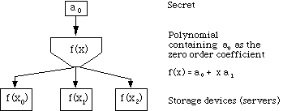
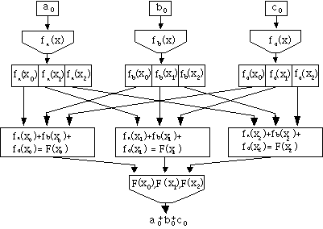

L. Jean Camp J.D. Tygar
lc2m@andrew.cmu.edu tygar@cs.cmu.edu
Department of Engineering & Public Policy School of Computer Science
Carnegie Mellon University
Pittsburgh, PA 15213
Historically there has been a tension between performance and privacy of information systems, because of the crucial role of collection of usage data. We examine how a number of different architectures approach this tension. We present both enhancements to traditional software architectures and also an architecture that resolves this conflict. We discuss a cryptographic technique called secret counting that allows us to collect aggregate data. We discuss these architectures and techniques in the context of the specific application of library information systems.
Electronic information system providers face a fundamental tension. To preserve the privacy of users, we want to keep information on their system use as secret as possible. On the other hand, system administrators need to collect detailed information on usage to tune and improve the system. This tension shows up repeatedly in information systems ranging from national census records to private medical information networks.
The ability of system administrators to evaluate and improve software, thus providing user friendly interfaces, reliable service and efficient systems, requires monitoring of software use. (Compaine, 1988) Because obtaining this information requires observing individual users over time as they adapt to information systems, there apparently exists a Hobson's choice between privacy and access to usage data. Our thesis is that technical methods exist to fully protect user privacy while permitting system administrators to sufficiently audit user behavior. To focus on a specific application, we address this paradox in the specific case of library information systems.
When patrons use an electronic card catalogue, they reveal information about their preferences and ideas. When used well usage data can provide information that helps administrators improve the performance of the library information system and provide better service. But we also run the risk of abuse; one can use this information to spy on or invade the privacy of a library patron. It is not enough to mask the identity of the user; information about the ways in which patrons change their use of the system over time requires correlations between current and historical system use. To assure that changes are the result of changes in user habits instead of changes in the user population; behavior of specific users must be identified. For the special case of library information systems providing access to on-line databases, information providers often require user identification to assure that the licensing agreement is being enforced. For the general question of information services providers, user identification is a necessary part of billing. Identifying individuals also allows people to be tracked by type. This can be used to identify when, for example, only the very literate are using particular services. How can we store needed usage information without permitting any possibility of abuse?
Other have addressed the apparent inverse correlation between privacy of personal information and availability of data from both the technical and sociological perspectives. (Herlihy, 1991; Herlihy, 1987; Randell, 1986; Randell, 1983; Marx, 1986; Pool, 1983; Sproull, 1991) The contribution of this work is a novel set of techniques that allow the goals of privacy and data availability to be satisfied simultaneously.
This paper offers software architectures that allow administrators to collect data without sacrificing privacy. It does not attempt to address the policy question of which data to collect. This paper is of interest to system administrators who make the decisions about data collection, as well as those system designers and programmers.
We consider different implementations of library information systems, and how they collect user data. We explore the trade-offs between privacy and the utility of information in each system. We compare three software architectures that can be used for representing user-specific usage data:
* holding all data in a single repository,
* holding data on smart cards (hand held computing devices), and
* a combination of both methods.
We discuss an important technique for storing data called secret counting. Secret counting makes possible anonymous updates of secure, aggregate information. The algorithm is discussed in detail in the appendix.
Our research clearly demonstrates that the conflict between privacy and utility of information is not necessary. Suitable technology resolves this conflict. The techniques and architectures described here have applications for other information providers.
Libraries need to obtain usage information and protect patron confidentiality. This conflict in library information systems is exemplar of the tensions between privacy and access to information. The widespread use of electronic information, confidentiality requirements, economic constraints and user-friendly interface development are factors libraries share with other information providers. Libraries provide a generalizable, understandable framework for addressing technical choices and their effect on privacy. In other writings we develop a hierarchy of privacy concerns, but here we consider technical means for achieving privacy (Camp, 1993).
Libraries maintain large scale information systems for cataloging and searching their holdings. Libraries' need to improving user interfaces and optimizing resource allocations requires gathering information about library system usage. Libraries draw on patron information to design user interfaces, to optimize resource allocation, and to provide service only to authorized users. Library information systems serve diverse user communities, with widely varying computer skills.
Libraries play a critical role in information dissemination. The legal right to free expression is limited by the ability to obtain and disseminate information. The right to hold certain unpopular opinions could become meaningless if notification of a third party is required whenever one researches an idea. (Barlow, 1990) In Griswold vs. Connecticut the Supreme Court identified the right to read and freedom of inquiry as components of the First Amendment. Libraries have long recognized their importance and the importance of patron confidentiality. Librarians have addressed patron confidentiality in their ethical codes since 1938. (Johnson, 1989) In this case there is no need to motivate the institutions involved.
Users want both privacy and efficient service. Users and libraries alike want to protect patron privacy. Libraries need information to serve users efficiently. Here is the apparent dichotomy between data availability and privacy.
We consider three architectures for providing both privacy and the information needed by library information administrators. These systems differ in physical storage media and use of software algorithms. The systems are a single data repository, smart card data storage and a hybrid method.
All three systems provide both data availability and privacy protection to some degree. In the first system data are physically under the control of library administrators; in the second system data are under the control of the patron; in third system the cooperation of both library patrons and administrators is required for complete data access.
Mercury/LIS II is a concrete example of a system with a single data repository. By examining Mercury/LIS II we identify discrepancies between library goals and the system as implemented. We separate those differences into those which are intrinsic to systems with single data repositories and suggest system improvements which yield a general privacy-enhanced system.
2.1.1 Standard Single Data Repository
We begin this section by discussing a concrete example of a single data repository, the library information system in use at Carnegie Mellon University. This system is arguably the most advanced library information system in use today, and its design is influential. (Arms et al., 1992) This system provides privacy protection through data selection, encryption and masking. While the privacy level in this particular system is not absolute, this sophisticated implementation of a single data repository has all the generic attributes needed to begin discussing the effects of system architecture on privacy.
The Carnegie Mellon library information system, Mercury/LIS II, collects the following information about each session:
* user id of the library patron;
* date of each search;
* login and logout times;
* network address from which the patron accesses LIS II;
* database used for each search: periodical catalog, commercial databases, card catalog, campus directory, etc.
During each session, the following information is collected:
* searches themselves, including type and method;
* number of records located in each search;
* types of sorts used to organize records obtained in a search;
* number and type of records displayed
* number and type of records saved; and
* method used to save records (electronic storage or printed copy).
LIS II administrators need information about how users adapt to LIS II. The library determines which options are most used and which are least often mastered, thereby identifying potential improvements. LIS II includes two types of privacy protection: a fixed encryption scheme and masking.
LIS II uses a constant encryption key in the encryption of the user identification field of search records. By using a constant encryption key, it is easy to track users as they learn and adapt to the system over time. But it also poses risk -- since the encryption key is fixed, if an adversary discovers the key, he can discover the identity of specific users.
The primary protection method is masking. Masking is used to protect information about the subjects of each search. Since data kept on searches are detailed and personal, the library masks the keywords used for searches. For example a search designed to explore the library's art history holdings entered as
art ADJ history AND 707.2/cn
is saved as
xxx ADJ xxxxxxx AND ddd.d/cn.
The lack of specific search information limits some legitimate use of the information for purposes such as resource allocation in acquisitions. This compromise reflects an administrative awareness of privacy. Privacy concerns limit the granularity of data. Here privacy and information utility are at odds.
Despite these measures, LIS II is not a high-privacy system. Users are not informed that information is being collected. A user, having learned about the compilation, could express a desire not to be included; the system, however, cannot satisfy such a request. Users cannot access all information that is uniquely linked to them. Not only do the majority of users not know about the compilations -- none of the users receive regular accounts about the use of information and they cannot prevent unauthorized use nor audit the data for accuracy. Users do not know the degree to which the data are protected nor the mechanisms used for protection. Retention periods are not defined. The encryption mechanism uses a constant key, which means the data is subject to exposure if the constant key is discovered.
Some limits in privacy protections associated with LIS II are not intrinsic to all single data repositories. They can be overcome by policy changes. In some cases changing the policy can have undesirable side effects, and technical alterations are needed to affect these changes.
For example, the users' lack of knowledge about the existence and uses of the compilation could be solved through a notification policy. When users initiate a search session they could be alerted about the existence of this compilation. However, the users' knowledge of this compilation might adversely affect system use. Even unsuccessful attempts by authorities to obtain records have resulted in users' self-censorship. This chilling effect would undermine the ability of LIS II to increase the availability and ease of access to information. Similarly users' could be provided with the ability to view records linked to their personal identifiers without changing the basic architecture of LIS II. However the addition of this functionality could pose risks. It could be subverted so that a user could look at other's records and privacy would be lost.
The conflicts in LIS II are common to many, but not all, single data repository systems. Some systems with single data repositories do not require user identification. This removes many privacy problems. In these systems information is stored only about sessions. Obtaining data about resource use, common user problems and the popularity of specific functions is possible. Any organization that removes identification looses some possible applications. For example, licensing agreements can prevent on-line remote access to databases without identification. Without user identification, libraries must depend on traditional constraints such as limiting the placement information retrieval terminals physically within the library building. This may not be an acceptable solution for the long term. Perhaps most important, this also eliminates the possibility of billing for information services. Furthermore, privacy protection in a system without user identification is not absolute. An individual's use could be determined through covert channel analysis. Statistical techniques might also be used on the data compilation to identify users.
2.1.2 Enhanced Single Data Repository
As discussed above, some of the limits of the LIS II system to protect privacy result from technical constraints. These constraints can be relaxed by changing the way data is stored on the system. This can be done with a powerful cryptographic technique called secret counting. Secret counting makes possible the anonymous update of aggregate information.
Secret counting is a technique that can maintain aggregate data without risk of privacy violations. Secret counting provides the ability to anonymously and constantly update counters. Secret counting offers both security and privacy. It provides full availability of information only when a predetermined number of people or access codes are present; when fewer than the minimum are present, no data is available. Aggregate data collection techniques such as secret counting are potentially vulnerable to statistically based attacks. (Denning, 1982; Fernandez, 1981) But secret counting distributes data over multiple repositories and requires that queries be processed by a quorum of repositories, allowing for control over information access.
Some of the library's needs for information on patterns of LIS II use could be filled without storing personal data, while maintaining user authentication, by anonymous updates to databases enabled by secret counting. Questions the library may ask include: Is a given LIS II function frequently used? By how many people? From which departments? Which departments use which databases? How often are bibliographic records from a given periodical called up? How often are these records printed or mailed? None of these questions require the use of data associated with specific individuals. These questions can be answered with aggregate values; the information needs of the library can be met with counters. Adding individual data only to the relevant sum diminishes the need for a database with personal identifiers. Without personal identifiers the library can collect more information. Privacy is not intrinsically at odds with information utility.
At least one of the privacy-reducing failures is a function of the system type. The only way to keep data on individuals over time is to use unique identifiers. Questions about frequency of use, distribution of use with respect to library information system usage history, cannot be answered using this system and these techniques. This means some correlations needed by administrators require compilations with unique identifiers. For this reason the user's ability to control access to data could require significant tradeoffs in administrative functionality. In addition, the ability of a user to view and correct data can result in a greater potential for privacy violations, as that ability can be used to subvert the integrity of data. In a single repository model, the library is forced to choose between efficient service and privacy.
With smart cards, users control their individual records using these cards. Smart cards are portable credit-card-sized devices with microprocessors and data storage. These cards can store personal data and encryption algorithms. A patron can store all data on the card and use authentication protocols to establish identity when initiating interaction with the library. No personal data need be stored in plaintext in the library system. We further extend this type of system to include cases where the patron holds only the encryption keys to his or her personal information. Here personal data can be in the library computer, but access is restricted through cryptography. In this latter case patrons, the smart card holders, control library access to personal data but data reside on the mainframe.
2.2.1 Smart Cards
Smart cards provide an alternative to storing usage information in the library's central repository. Smart cards allow users to keep the information themselves. Smart cards are small memory devices that can be connected to the library information system before searching for information. Smart cards contain a physically sealed coprocessor that can be connected to a computer. Smart cards both store and process information. Users cannot tamper with data on a smart card but they can physically possess the only copy of information, providing strong privacy guarantees.
Smart cards also make it easy for a user to identify himself as an authorized user without revealing any information except his or her identity. Zero-knowledge techniques allow a party to identify himself but provably do not leak any information. (Feige, 1987; Tygar, 1991a)
What if the smart card is lost or unavailable? To recover the information stored on the virtual smart card, one of three approaches might be used. First, the user could be advised to carry a back-up card with duplicate decryption key information. Second, the user could be required to register the cryptographic key with a highly protected, trusted key registry. Public key techniques facilitate this. (Micali, 1993) Finally, the cryptographic system could be made with deliberate weaknesses to allow the data to be decrypted at the expense of heavy but tractable effort. This approach would be useful in other circumstances, such as obtaining subpoenaed information.
Smart cards meet many criteria for a high privacy data compilation. First, the users are informed; they know that data is being compiled. In addition, with the use of zero knowledge identification protocols and physically secure cards, the data is provably protected from unauthorized access or tampering. All information with unique identifiers is physically controlled by the user. The user prevents unauthorized access to data because any data use requires user cooperation. As the library has to query the card for stored information, the user knows when information has been used and can request the reason for use as a condition of sharing information.
Since there is no compilation under the organization's control, the organization is not responsible for deletion, reliability or security. But the data-collecting organization is not released from all privacy responsibilities by individual control over data. Organizations must take care to request only necessary information from their users. The reasons for requesting specific information should be clear and available to the users. Any data that are requested or copied from the user must be fully protected.
One downside to the use of smart cards is a library's data access could markedly decrease. Without access to data, the library's efforts towards efficiency in resource allocation and customer service could be obstructed. Individuals may refuse to share information with the library. Only some users might recognize the validity of the need to refine the library information system and the value of sharing data with the library, producing a selection bias. In sum, the smart card system could provide a high level of privacy to the user at a high potential cost to the library.
2.2.2 Virtual Smart Cards
Smart cards have limitations. They have limited storage capacity. There are smart cards that can store up to a gigabit (109 bits) of data, but these cards are rare and expensive. (McCrindle, 1990) Moreover, there may be some circumstances in which it is necessary to obtain user information without physical access to the card. For example, if the smart card is lost, the user may want to recover data that was stored on the card.
We therefore propose virtual smart cards. A virtual card stores data in a single data repository in encrypted form. The physical card holds only the encryption key. Virtual smart cards efficiently exploit limited storage capacities on a smart card. Information on the virtual smart card can only be retrieved by presenting an appropriate decryption key on the smart card. A virtual smart card may be a simple as a card with a magnetic strip that stores cryptographic keys. This would lower the requirements of a smart card reader to that of a magnetic card reader.
Virtual smart cards require a trusted information system. In practice this is also true of traditional smart cards. The user of a traditional smart card need only trust the manufacturer of the card. However, most users will obtain their cards from the library itself and will have neither the equipment nor the expertise to test the security of the cards. Therefore, both traditional smart cards and virtual smart cards require some degree of trust in the information system.
Although virtual smart cards have substantial advantages, virtual smart cards share some of the weaknesses of smart cards. Neither card overcomes the tension between the library's needs for information and patron confidentiality. Library access to data in this case would again be limited. The need to track users to obtain usage information is not removed. User privacy is selected over the needs of system designers. But the conflict remains.
The cost of smart card systems, both in terms of data availability to the library and the expense of gigabit cards, has retarded their widespread implementation. Yet the single data repository alternative requires difficult tradeoffs. To resolve these problems we have developed an architecture which uses both a single data repository that compiles aggregate data and smart cards that protect individual information. The hybrid system stores all necessary aggregate data obtained from individuals without revealing any information uniquely linked to them, producing required auditing data without compromising privacy. Only aggregate data can be accessed, because only aggregate data is stored in the library's data compilation.
In the discussion of single repositories, we mentioned aggregate collection of data through secret counting. (An expanded description of secret counting can be found in the appendix.) Secret counting keeps aggregate data in such a way that it cannot be associated with any user. Counters of this type are used to store aggregate data in the hybrid system.
In the hybrid system, information associated with the user (department, group, etc.) is kept by the user on a smart card or virtual smart card and only accessed during sessions with the library system. If the information available from the smart card includes the number of previous sessions and the number of each type of searches, the library could track changes in system use through counters. In this case, the counters function as constantly updated correlations. Counters provide information on use of selected functions correlated with the number of previous searches or other historical attributes.
For example, the use of each type of sort could be counted. In addition, the number of times a sort is used in a first, second, or nthsession could be calculated. For example, a counter could show how quickly patrons learn to use the ability to search using a previous set.
The proposed hybrid record keeping system provides a high level of privacy. Consideration of the system capabilities that are lacking in the previous two examples would illustrate this. But a simple observation suffices: there is no data with personal identifiers. Correlations other than those defined as counters cannot be made.
The hybrid system has a very important advantage. This system addresses both the balance between the need for information and the user's right to privacy and a related conflict between robustness and security. A system is robust if information is reliable and available. A system is secure if access is controlled. Since robustness usually implies replication, robust data is often more available for theft or abuse. Both previously discussed systems, smart cards and single repositories, have this problem: they can be made more robust by increasing the number of copies of the data. Each copy should be isolated from the other copies. Physically separate copies which can be accessed through different gateways offer a more robust system than copies on multiple servers in one area, which in turn, is more robust than multiple copies in one repository. Thus robustness and security appear to be at odds. As the number of copies increases, the security of the data decreases. Smart cards are constrained by the same dichotomy. Computer scientists often express this tradeoff by saying that increased availability results in decreased security.
To escape from the endless cycle of conflict between availability and security we use the secret counting technique. This method stores information in multiple repositories. To access the data, the query agent must access a minimum quorum q of those repositories. If it only accesses q-1of the repositories it will provably be unable to recover any of the information from the text. Thus robustness increases (we can tolerate the failure of up to n-q repositories) while security increases (an agent must contact q repositories to recover information). The data can survive more system failures, be available to more queries at one time, and be more difficult to obtain without authorization.
Consider the application of secret counting to library user data. Because actions, not individuals, are tracked, the subject and results of each search can be documented. This documentation provides information for resource allocation. A counter could be maintained for each resource in question. For example, the library could know how often a particular periodical is called on a search, displayed in a record and saved. This method could be implemented with a counter for each periodical. Through this technique there is an increase in granularity of information without a decrease in privacy.
The hybrid system we described offers a potential increase in security and robustness. Furthermore, it solves the privacy problem by removing the need to keep information with unique identifiers. It maintains the utility of information by answering the questions that the library had previously answered with the compilation. It overcomes the conflict between usage information and user confidentiality requirements.
Privacy has been limited in electronic information systems, in part, because of its perceived high costs in terms of access to usage information. We have presented methods for resolving the conflict between privacy and data availability. We have shown that there are technical options which avoid this conflict in the special case of library information systems.
This research is applicable to other information settings in three respects: information needed by system administrators requires files uniquely linked to individuals in a single data repository, the use of counters and smart cards removes the need for access to individual user records, and the best of both architectures can be preserved.
The techniques used in this paper significantly reduce the dependence on administrative oversight for privacy protection. The expansion of the use of innovative cryptographic techniques reduces the need to sacrifice privacy for data. The tools and concepts used in building the proposed library information system offer promise to other applications in the public and private sectors, such as census information, academic records, financial records, etc.
The software architectures presented here allow libraries to obtain all the aggregate information needed for software development and resource allocation without violating patrons' privacy. The ability to audit use of information systems without compromising confidentiality protects the interest of the library and its patrons. The hybrid architecture can be implemented with current processing, smart card and peripheral, and cryptographic technologies.
Secret counting is an innovative technique to store aggregate data which can be continually and anonymously updated. Furthermore, this data can only be recovered with the cooperation of multiple parties. This technique is based on additive homomorphisms of polynomials over finite fields.
Secret counting builds on the important and powerful technique developed by A. Shamir, secret sharing. (Shamir, 1979). Later researchers have shown many important applications of secret sharing (Micali, 1993; Rabin, 1988; Herlihy, 1987) and methods for calculating with secret shared values. (Benaloh, 1987; Rabin, 1989) This method extends the secret sharing technique by considering the special case of addition of secrets while still in protected form.
Data can be distributed to n servers and divided in such a way that one must access a quorum of q locations to obtain the information (q<n). With access to a quorum of q locations all information is available, but with access to only q-1 locations, no information is available. The need for an access to multiple data repositories (as opposed to a single repository) can prevent a lone individual from abusing access privileges. It can also enhance privacy by increasing the system's security.
Secret sharing protects a secret stored as an integer value, a0. There are n people who are authorized to view this data, but only if qor more of them are present. Let p be a prime much larger than a0. Then the integers modulo p form a finite field. Select q-1integers, a1, a2, ....aq-1 at random. These values are kept secret. Construct the polynomial f(x) = a0 + a1x1 + a2x2+. . . +aq-1xq-1 (mod p).
Notice that the secret is the 0th order coefficient in this polynomial. Using this function calculate f(x1), f(x2), . . . f(xq-1). Give each of the n people one matched pair of numbers, {xi, f(xi)}. A set of q of these pairs yields a set of q linear equations with q unknowns, a0, a1, ....aq-1 . Therefore, any q people can solve for the unknowns and access the data stored as a0. But with the information available to only q-1people, a0 could be any value modulo p.
Secret counting extends naturally to distributed systems. If there can ben servers, the ability to access a quorum of q servers offers access to all data. Queries must be done to multiple servers. It makes the data more reliable, as more than q servers would have to be changed to assure that the incorrect data was accepted. Figure 1 is a representation of the three-server case, where it is necessary to have access to two servers to determine the value a0. (i.e. n=3 and q=2).
* provides the ability to keep an active count or correlation;
* reveals the value in the presence of a quorum; and
* reveals no information or partial information if fewer than the required quorum are available.

Figure 1: Secret sharing, the 3-party case
We will illustrate secret counting using an example. Consider the case where there are three values of private data, a0, b0 , and c0, which correspond to the secrets of three different parties. We will show how to calculate a0 + b0 + c0. For example, consider three people who would like to know their total aggregate savings, without any one knowing exactly what the others have. No single individual wants to provide her own savings account balance to the other parties, but all of them want to know the group total.
How can these people obtain the desired sum without losing their privacy? Using a combination of secret sharing techniques and the additive property of polynomials defined over a finite field, we can construct a protocol satisfying the above desiderata. First, each person constructs a polynomial modulo p where the 0th order coefficient is her savings account balance and all other coefficients are randomly selected. Second, each person calculates the value of the polynomial containing her secret at three previously determined points, x0, x1 and x2 (where x0, x1 and x2 are all non zero and less than p). Then, all share their functional values, with the first person getting the values of the three functions at x0, the second the three values at x1 and the third the values at x2. All operations are done modulo a large prime pand no x value can equal zero.
Figure 2 illustrates the three party case. It shows the three functions:
fa(x) = a0 + a1x1 + a2x2 (modp)
fb(x) = b0 + b1x1 + b2x2 (modp)
fc(x) = c0 + c1x1 + c2x2 (mod p)
which sum to
F(x) = fa(x) + fb(x) + fc(x) = (a0 + b0 + c0 ) + (a1+ b1 + c1) x1+ (a2+ b2 + c2) x2 (mod p).
The crucial observation is that F(x) is itself a secret sharing polynomial, and its constant term is (a0 + b0 + c0).

Figure 2: Secret counting, the 3-party case.
Distribute matched pairs {xi, F(xi)} to the three people as described above. The sum of the values, a0 + b0 + c0. is available but not the individual data points, a0 , b0 and c0. Thus, three individuals can share their aggregate information without losing their own privacy.
We have discussed the secret counting technique as it applies to three parties (or servers). There is an immediate and natural extension to an arbitrary number of parties. The algorithmic cost of performing this operation over n parties is on the order of the algorithmic costs of performing a n x n matrix inversion. Extending the case to n parties with a quorum q will result in the extension below. (In the three party case the order of the polynomial below, q was two.)
f1(x) = a1,0 + a1,1x1 + .... + a1,n-1xn-1 (mod p)
f2(x) = a2,0 + a2,1x1 + .... + a2,n-1xn-1 (mod p)
. . .
. . .
. . .
f3(x) = a3,0 + a3,1x1 + .... + a3,n-1xn-1 (mod p)
Adding these equations yields:
F(x) = [[Sigma]]ai,0 + ([[Sigma]]ai,1 )x+ ([[Sigma]]ai,0 )x2+ ....+([[Sigma]]ai,n-1)xn-1 (mod p)
Recall the properties identified in the beginning of the appendix: the ability to keep an active count; value revealed with a quorum; and no information revealed with fewer than the required quorum. These properties extend naturally from the case of secret sharing since for q unique points x1, x2, ..., xq the resulting set of equations will be linearly independent and over a finite field, we can solve for the q unknown coefficients (including the 0th order coefficient; the sum of the secrets) using Gaussian elimination. On the other hand, if we only have q-1 unique points, then any value for any additional pair (x, F(x)) with a new x would yield a linearly independent equation (since the vector[1,x,x2,x3,...,xq-1] is linearly independent for unique values of x) meaning that no information is revealed.
Now we have the machinery to apply secret counting in the library information system. If a user accesses service S through an application rtimes, the application form a secret shared value of r and sends the shares to n different repositories for addition to the running tally for the S service. Later, when we want to know how many times the service S has been used in the system, we simply go to q of the servers taking the sum from each. Since only the sum is revealed all information about each individual user accessing the system is revealed only in aggregate form.
Benaloh, J., 1987, Verifiable Secret-Ballot Elections, dissertation, Department of Computer Science, Yale University, New Haven, CN
Barlow, J., 1990, "Crime and Puzzlement", Whole Earth Review, Fall, pp 45-56
Camp, L. J. & Tygar, J. D., 1993, "Providing Auditing and Protecting Privacy", Carnegie Mellon Technical Report CMU-CS-93-118, Carnegie Mellon University, Pittsburgh, PA
Compaine, B. J., 1988, Issues in New Information Technology, Ablex Publishing; Norwood, NJ
Denning, D., 1982, Cryptography and Data Security, Addison-Wesley Publishing; Reading, MA
Diffie, W. & Hellman, M. E., 1979, "Privacy and Authentication: An Introduction to Cryptography", Proceedings of the IEEE, Vol. 67, pp 18-48
Feige, U., Fiat, A. & Shamir, A., 1987, "Zero Knowledge Proofs of Identity", Proceedings of the 19th ACM Symposium on Theory of Computing, pp 210-217
Fernandez, E. B., Summers, R. C., & Wood, C., 1981, Database Security and Data Integrity, Addison Wesley Publishing Co., Reading, MA
Herlihy, M.P. & Tygar, J.D., 1987, "How to Make Replicated Data Secure", Advances in Cryptography-CRYPTO `87, ed. Pomerance, Springer-Verlag, Berlin
Herlihy, M.P. & Tygar, J.D., 1991, "Implementing Distributed Capacities Without a Trusted Kernel", Dependable Computing for Critical Applications, ed. A. Avizienis & J.C. Caprie, Springer-Verlag, Berlin
Hodges, A., 1983, Alan Turing: The Enigma, Simon & Schuster; Great Britain
Johnson, B. S., 1989,"A More Cooperative Clerk, The Confidentiality of the Library Record", Law Library Journal, Vol. 81, pp 769-803
Marx, G., 1986, "Chapter 9: The Iron Fist and The Velvet Glove", The Social Fabric: Dimensions and Issues, ed J. E. Short, Sage Publications, Bevely Hills CA, pp 135-162
McCrindle, J., 1990, Smart Cards, Springer-Verlag; New York, NY
Micali, S, 1993, "Fair Public-Key Cryptosystems", Preliminary Draft, Laboratory for Computer Science, Massachusetts Institute of Technology, Cambridge, MA
National Bureau of Standards, 1977 "Federal Information Processing Publication 46: Specifications for the Digital Encryption Standard", The Security of Data in Networks, ed. Davies, 1981, IEEE Computer Society Press; Los Angeles, CA; pp 64-74
Pool, I.S., 1983, Technologies of Freedom, Harvard University Press, Cambridge, MA
Rabin, T. & Tygar, J. D., 1988, An Integrated Tool Kit for Operating Systems Security, Harvard University, Aiken Laboratory Technical Report, TR-88-05, revised 1990, Harvard, Cambridge, MA
Rabin, T and Ben-Or, M., 1989 , "Verifiable Secret Sharing and Multiparty Protocols with Honest Majority", Proceedings of the Twenty-first Annual ACM Symposium on the Theory of Computing, Seattle, WA, May
Randell, B., 1983," Recursively Structured Distributed Computing Systems", Proceedings, Third Symposium on Reliability in Distributed Software and Database Systems
Randell, B. & Dobson, J., 1986, "Reliability and Security Issues in Distributed Computing Systems", Proceedings, Fifth Symposium on Reliability in Distributed Software and Database Systems
Rivest, R. L., Shamir, A. & Adleman, L., 1978, "A Method for Obtaining Digital Signatures and Public-Key Cryptosystems", Communications of the ACM, Vol. 21, pp 158-164
Shamir, A., 1979 "How to Share a Secret", Communications of the ACM, Vol. 22, pp 612-613
Sproull L. & Kiesler S, 1991, Connections, The MIT Press, Cambridge, MA
Tygar, J. D. & Yee, B., 1991a "Strongbox: A System for Self Securing Programs", CMU Computer Science: A 25th Anniversary Commemorative, ed. R. Rashid, 1991, Addison-Wesley and ACM Press; New York, NY, pp 163-198
Tygar, J. D. & Yee, B., 1991b "Strongbox", Camelot and Avalon: A Distributed Transaction Facility including the Avalon Language ed. Eppinger, pp 381-400